潮汕饮食文化
“东门买彘骨，醢酱点橙薤。蒸鸡最知名，美不数鱼鳖”
—— 佚名
简介
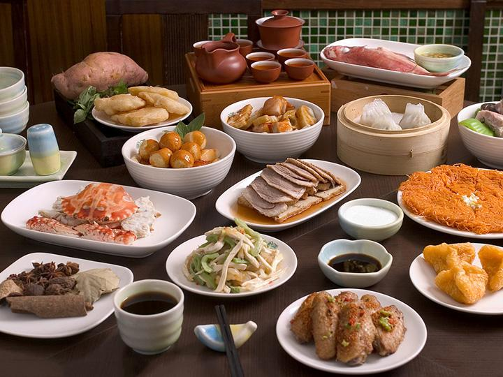
潮菜为广东菜三大流派之一，发源于潮汕平原，历经千余年而形成和发展，以其独特风味自成一体， 清而不淡，鲜而不腥，嫩而不生，油而不腻；讲究佐料，注重汤水；烹调方式上，烧炒炖炸俱全；讲求色香味型，丰富多彩。 随着潮州地区经济文化的发展，潮州菜肴的文化在不断地吸取其他地区的烹调技艺而形成自身特点与优长。
潮州菜源于潮州，已有数千年的历史。据史料记载，潮州菜可追溯到汉。盛唐之后，受中原烹饪技艺的影响，发展很快。 唐代韩愈临潮时，对潮菜美味赞叹说：“……章举马甲柱，所以怪目呈。其余数十种，莫不可叹”。 至明末清初，潮州菜进入鼎盛时期，潮州城内名店林立，名师辈出，名菜纷呈。 近代，由于潮籍海外华侨的往来，潮州菜博采海内外名食之精华，菜式更加丰富多彩，质量精益求精。 时至今日，潮州菜已经发展成为独具岭南文化特色、驰名海内外的我国名菜之一。
说了那么久，我还不知道潮汕地区在哪呢 潮汕地区位于广东省东部沿海，主体是潮汕三市（汕头、潮州、揭阳）。
（划重点，要考！）
所属菜系
潮州菜属中国八大菜系中的粤菜，以昂贵著称，其选料考究、刀工精细，且烹调方式多样，着意追求色香味俱全，有中国最高端菜系之称。中国菜享誉全球，潮州菜堪称中国菜登峰造极之作。勇于创新是潮州菜誉满全球的最重要原因之一。
特点
海鲜
就在刚刚我们提到，潮汕地区位于广东省东部沿海，我们潮汕人烹饪海鲜的技能自然也不弱啦！ 我们对海鲜的烹调选料考究，制作精细，至于以酱碟佐料，达到新鲜美味，清而不淡， 鲜而不腥， 郁而不腻。 如鸳鸯膏蟹、生菜龙虾、红炖鱼翅、蚝烙、清炖乌耳鳗、清汤蟹丸等，是潮菜海鲜类的代表名作。
 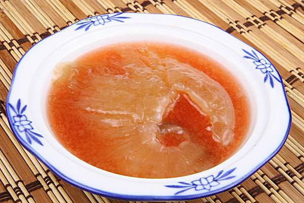
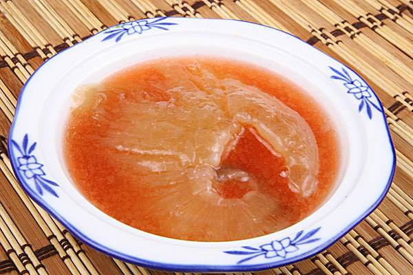
清淡
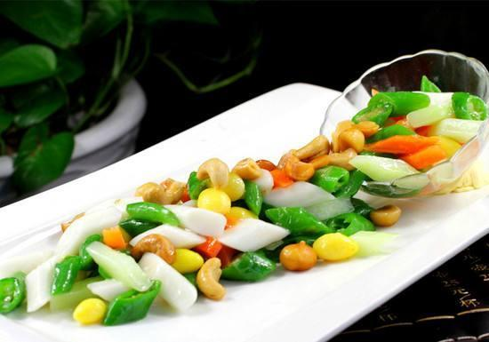
口味崇尚清淡。清代美食家袁枚曾说：“味者宁淡毋咸”。清末徐珂《清稗类钞》也指出：“粤人喜欢淡食”。这里说的“淡”并非淡而无味，而是清中求鲜，淡中取味，这也就是潮汕人所说的清淡。古时已有人说过：“寒园之人好多脂，热园之人好淡泊”。可见潮汕尚清淡，厌肥腻，跟它地处亚热带、夏季长、气候暖热有直接的关系。
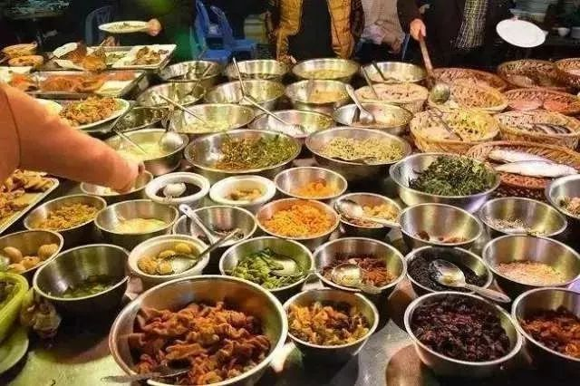
喝粥配杂咸
潮汕人超级喜欢喝粥，这一喜好有很长的历史。北宋时期潮州地方先贤吴复古很重视粥的养生作用，说白粥可以“推陈致新，利膈益胃。”吴复古是揭阳县蓬州郡人（今属汕头市），和苏东坡一家交好，做过皇帝的老师。吴复古喝粥养生的理论，在潮汕地区影响很大，喝粥的传统也就从那时一直保持了下来。
所谓杂咸，即是潮汕地区特有的对腌制冷盘的佐餐小菜的统一叫法。制作杂咸的材料多种多样，有橄榄菜、大菜、白萝卜等菜类；也有蟛蜞、红肉、小虾、螺、蚌、蚬等河鲜。因此制成的杂咸也就多种多样：干菜脯、甜黄豆、橄榄菜、腌橄榄、甜豆干、咸菜、榨菜、腐乳……
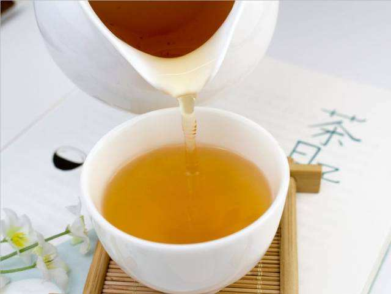
功夫茶
工夫茶是潮汕地区极富地方色彩的茶道文化，它历史悠久，植根于千家万户，几乎可以说，凡是有潮汕人的地方，就有人冲泡工夫茶，它在冲法上，不论是器具、用水、程序、饮法，都极具潮汕地方风味，我们甚至可以说，工夫茶是潮人的代表特征。
追求极致新鲜
潮汕的牛肉火锅就是其中一个很好的例子。潮汕地区的牛肉现宰现吃！屠宰的时间配合饭点时间，两三小时内上桌，一天多次屠宰，确保肉质新鲜！不冷冻，不排酸，唯新鲜取胜，这才是潮汕牛肉的灵魂与精髓。
当然，以上所展示的只是潮汕菜的冰山一角，真正的美味需要各位去潮汕地区亲自品尝。
大致分类
潮州卤水类
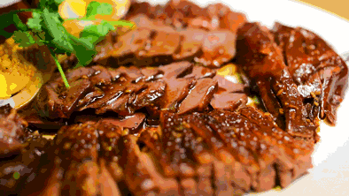
生腌&杂咸类
 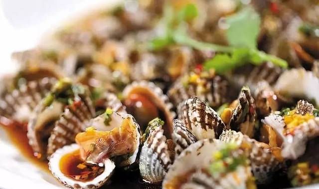
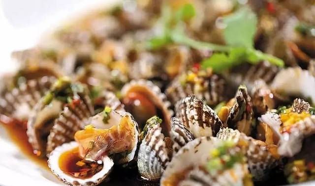
潮汕牛肉系列
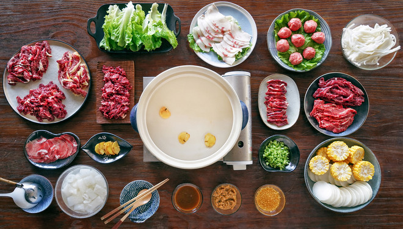 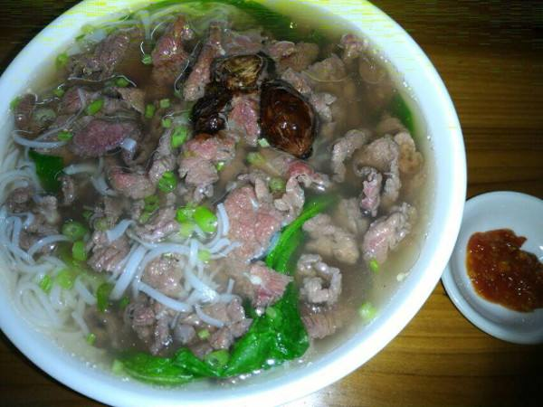
粿系列
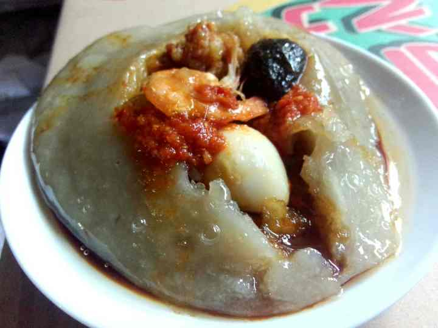
饼系列
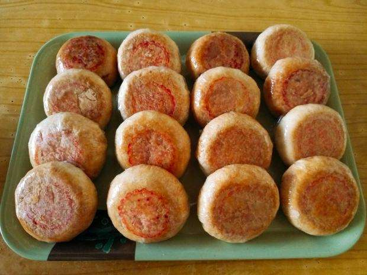
早餐肠粉系列
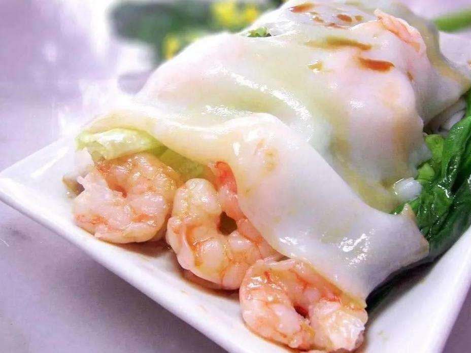 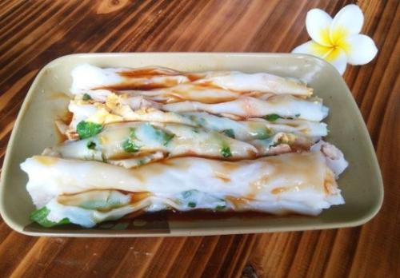功夫茶
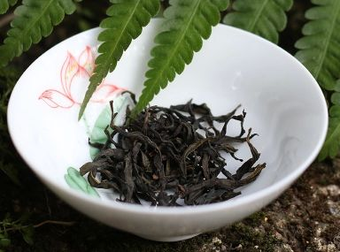
潮汕美食种类繁多，这里只列举其中的几点。其中的功夫茶、牛肉、粿和饼可在导航栏中查看。